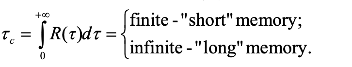

Research note · Time Series
Long- and Short-Term Memory in Financial Time Series
In the analysis of financial time series—such as daily stock prices, trading volumes, or market volatility—the concept of "memory" refers to autocorrelation: the degree to which past events and data points influence future ones. If a market is perfectly efficient and follows a pure random walk, it has zero memory; tomorrow's price change is completely independent of today's. However, real financial markets often exhibit periods where the past does influence the future. We categorize this influence into short-term and long-term memory based on how quickly that influence fades.
Financial time series has short-term memory if the influence of a past event on future values decays rapidly. The system quickly "forgets" recent shocks and returns to its baseline behavior. The autocorrelation function, rho(tau) drops off very fast as the time lag tau increases. In formal terms, the decay is typically exponential, meaning the sum of all autocorrelations over time is a finite number.

This implies that the market digests new information quickly. Traders react, prices adjust, and the localized trend dissipates. Standard price returns usually exhibit very short (or zero) memory; if they didn't, traders could easily use yesterday's price to predict tomorrow's and arbitrage the pattern away.
Short-term memory like a single stone thrown into a small, calm pond. It creates sharp, distinct ripples immediately, but those ripples dissipate entirely within a few seconds. In real world, suppose A mid-sized tech company announces an unexpected change in its supplier for a minor component. The stock dips sharply that afternoon as high-frequency algorithms and day traders react. By the next morning, analysts have assessed that the financial impact is negligible. The stock might show a tiny bit of residual chop, but within 48 hours, the price movements are entirely driven by broader market forces again. The "memory" of the supplier news has vanished.
A time series has long-term memory if the influence of past events decays very slowly. Even events that happened far in the past continue to exert a subtle, persistent mathematical pull on the system's current and future behavior. Instead of an exponential drop, the autocorrelation function decays asymptotically as a power law. Because this decay is so incredibly slow, the sum of the autocorrelations across all time lags diverges to infinity. long-term memory suggests a complex, highly interconnected system with feedback loops. While raw price direction rarely has long memory, market volatility (the absolute magnitude of price changes) and trading volume famously do. This is a core "stylized fact" in econophysics.
Long-term memory like shifting the course of a massive river. If a massive flood carves a new bend in the riverbed, the water flow is permanently altered. Even years after the rain stops, the water still flows differently because of that past event. Suppose there is a "volatility clustering" following a major macroeconomic shock, like a sudden, global liquidity crisis. The initial crash creates absolute panic. However, unlike the short-term example, the market doesn't digest this and move on in a week. The shock fundamentally alters risk models, tightens lending standards, and scars investor psychology. Even six months or a year later, on a day with absolutely no new economic news, the market remains structurally "jumpy." The magnitude of daily price swings remains elevated because the time series retains the long-term memory of the initial crisis.